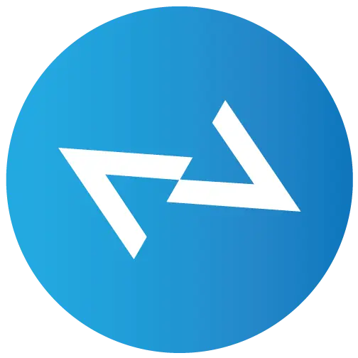
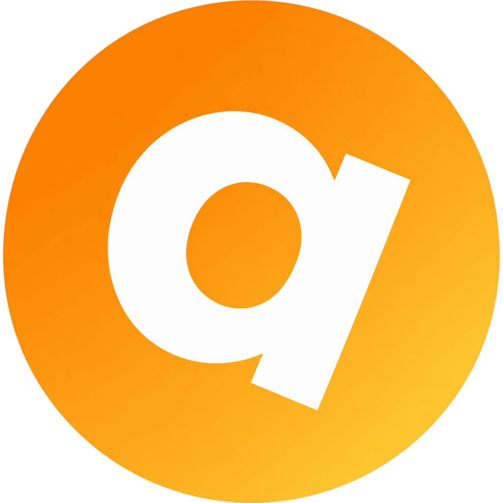

Ясность
Спокойная архитектура интерфейса помогает видеть людей и сообщения, а не бесконечные механики вовлечения.

Vadzim.by
ATEN messengerСвет. Мысль. Диалог.
Современный мессенджер, вдохновлённый идеей Атона: ясность вместо шума, человеческий голос вместо алгоритмического давления.
Windows 10/11 · 64-bit · Версия 0.1.4
Принцип солнечного диска
В атонизме свет был единым и доступным каждому. В ATEN этот образ становится принципом цифрового общения: понятным, прямым и свободным от лишнего давления.
Спокойная архитектура интерфейса помогает видеть людей и сообщения, а не бесконечные механики вовлечения.
Безопасные соединения, контролируемый доступ и прозрачные действия создают пространство доверия.
Личные чаты, группы, каналы, реакции и голосовые сообщения служат разговору, а не отвлекают от него.
Древний символ. Современная инженерия.
ATEN соединяет выразительный характер с привычной логикой современного мессенджера. Интерфейс остаётся быстрым и понятным на большом экране и в компактном окне.
Безопасность без громких обещаний
Мы развиваем ATEN как управляемую среду общения: проверяемые профили, инструменты модерации, жалобы, блокировки и защищённое сетевое соединение. Новые версии распространяются через официальный установщик Vadzim.by.
Выберите свой путь
Установите текущую версию для Windows. Остальные платформы откроются по мере готовности.